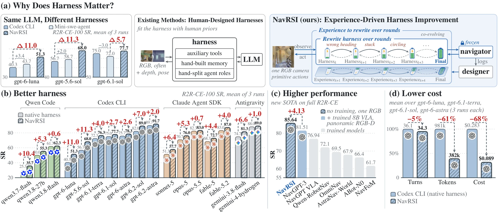
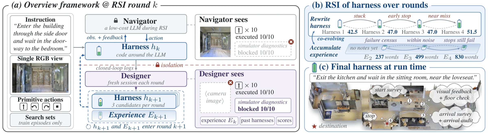
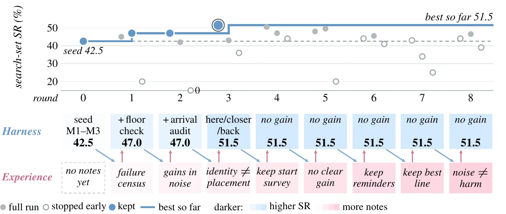
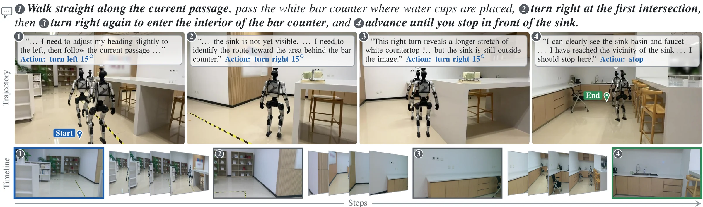

NavRSI: Recursive Harness Self-Improvement for Vision-and-Language Navigation
NavRSI rewrites the program around a frozen LLM from its own closed-loop navigation experience. One RGB camera, primitive actions, no training.
1Singapore Management University · 2Renmin University of China · 3Fudan University · 4Nanjing University of Science and Technology †Project leader and corresponding author
Success rate, full R2R-CEval-unseen split with GPT-6-Astra, without any training
SR over the previous bestNavGPT-3, which adds a trained 8B VLA and panoramic RGB-D
Better than the native harnessacross four vendors, by up to +11.3 SR on R2R-CE-100
API cost vs. Codex CLImean over four GPT models, with 61% fewer tokens
The same LLM navigates very differently under different harnesses. So we stop hand-designing the harness and let it improve itself from closed-loop experience.
Frontier large language models (LLMs) have enabled vision-and-language navigation (VLN) through direct closed-loop perception and action. However, navigation performance depends strongly on the harness governing LLM–environment interactions, while existing harnesses largely rely on manually designed navigation tools, memory, and agent roles. We introduce NavRSI, a harness-centric recursive self-improvement framework that optimizes the navigation behavior of frozen LLMs through closed-loop experience. In each round, NavRSI iteratively collects navigation trajectories and failure diagnostics, employs a designer agent to rewrite the harness, and retains the revisions that prove effective, while the designer accumulates experience from previous revisions so that the harness and this experience co-evolve. Privileged simulator diagnostics guide only the designer and remain inaccessible to the navigating LLM, enabling deployment with a single RGB camera and primitive actions, without task-specific model training or additional navigation tools. Experiments demonstrate consistent improvements across LLMs from four vendors, with 85.64% success rate on the full R2R-CE val-unseen split with GPT-6-Astra, surpassing the previously reported best by 4.13%. Evaluations on RxR-CE, NavRAG-CE, and a real humanoid robot further demonstrate its generalizability.
Same LLM, different harness, very different navigator
The harness is the program between the LLM and the environment. It decides the LLM's context, tools and feedback. Existing harness-based VLN methods build it from human priors. NavRSI lets the navigator's own closed-loop behavior shape it.
Human-designed harnesses
- Auxiliary navigation tools
- Hand-built memory
- Hand-split agent roles
- Often depth, pose or panoramic input
Experience-driven harness improvement
- The harness is rewritten over rounds from closed-loop logs
- The designer's experience co-evolves with the harness
- The LLM stays frozen
- One RGB camera and primitive actions

Click to zoom(a) The same LLM performs very differently under different harnesses. (b) NavRSI improves SR over native harnesses across four LLM families on R2R-CE-100. (c) 85.64% SR on the full R2R-CE val-unseen split. (d) Fewer tool calls, tokens and API cost than Codex CLI.
One round of recursive self-improvement
RSI starts from the open-sourced Mini-swe-agent harness, Seed 0, and rewrites it round by round. The search uses training episodes only, and a low-cost LLM stands in for the navigator.
The navigator sees
- ✓The instruction
- ✓Its camera views
- ✓The harness's feedback
- ×Simulator diagnostics
The designer sees
- ✓Closed-loop logs and simulator diagnostics
- ✓Past harnesses with their scores
- ✓Its own experience
- ×Any image

Click to zoomOverview of NavRSI. (a) One RSI round with the isolation wall between navigator and designer. (b) Search-set SR of each round's best harness, and the growing experience. (c) The final harness for evaluation.
Three abilities, six modules, all written by the designer
Found with the low-cost GPT-6-Luna, the final harness runs unchanged with LLMs from four vendors.
Action feedback
Visual feedback compares consecutive camera views in code. After a forward batch with a nearly unchanged view, it reports a likely obstruction. A floor check then tilts the camera down to the floor.
Progress tracking
Before the first move, a start survey turns the robot around once and gives the navigator four labeled views. Every later view is labeled with heading and camera pitch, and revisits are flagged.
Arrival verification
The first STOP becomes a proposal. An arrival survey takes fresh views around the robot, and an arrival audit, run one reasoning-effort level higher, decides to stop, move closer or go back.
One harness, seventeen LLMs, four vendors
On R2R-CE-100, the same final harness replaces each LLM's native harness (Codex CLI, Claude Agent SDK, Antigravity, Qwen Code). Only the LLM changes. Numbers are means of three runs at each LLM's default reasoning effort. The two GPT-6.2 models, released after the paper, are added at medium effort.
Full val-unseen splits
Against trained models and harness-based methods. NavRSI uses a single RGB camera and no external training data.
The final harness runs on RxR-CE unchanged, with the best nDTW of 78.97, although most trained methods learn from RxR-CE data.
With the same LLM as the LLM-based baselines: +10.3 ± 4.2 over NavGPT-3 and +5.3 ± 3.2 over MIP (paired, s.e.).
GPU memory instead of 18.97 GB for NavGPT-3 on the same 800 RxR-CE episodes, at on-par SR.
Does the loop matter?
RSI ran with GPT-6-Luna only, yet the final harness raises SR over Seed 0 on every GPT model tested.
Best search-set SR rises in three rounds. Stopping RSI earlier gives a weaker harness, and five more rounds find none better.
Three harnesses written in one shot by the same designer all fall below Seed 0. NavRSI is +10.89 ± 2.82 SR above their mean.
With no record of earlier rounds, 52.8% of new rewrites repeat an earlier one. With the experience alone, none do, at 2.2k words in place of 13.1M.

Click to zoomHarness rewriting in RSI. Top: search-set SR of all 24 rewrites. Bottom: each round's experience from the designer.
From Seed 0 to the final harness
SR on R2R-CE-100, mean of three runs.
From simulator to a humanoid robot, unchanged
The final harness drives a Unitree G1 humanoid with a single head-mounted RGB camera, without any real-world data or tuning. 25 real-world instructions, each run four times.

Click to zoomReal-world demo on the Unitree G1. The navigator keeps turning right while “the sink is still outside the image”, and stops only once “the sink basin and faucet” are in view.
Success rate, real world
All three methods use GPT-6-Astra. Baselines use their own sensors.
What transfers
Nothing in the harness is specific to the simulator. The navigator only ever received the instruction, its camera views and the harness's feedback, all of which a real robot has. The simulator diagnostics that guided the search never reached it.
BibTeX
@article{dai2026navrsi,
title = {NavRSI: Recursive Harness Self-Improvement for Vision-and-Language Navigation},
author = {Dai, Guangzhao and Lian, Guoxin and Wang, Shuo and Yue, Shengbin and
Sun, Qianru and Shu, Xiangbo and Zhu, Bin},
journal = {arXiv preprint},
year = {2026}
}